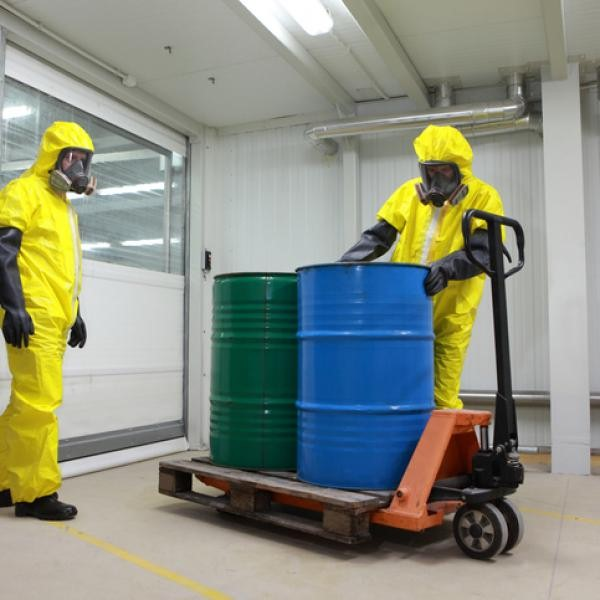
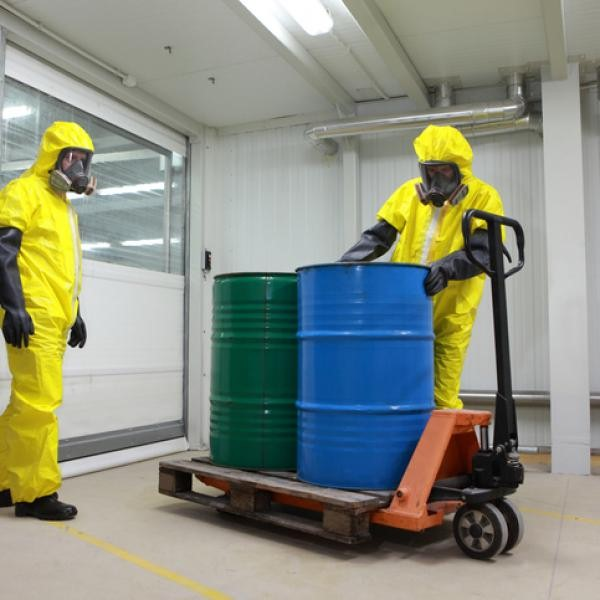
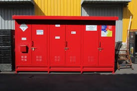
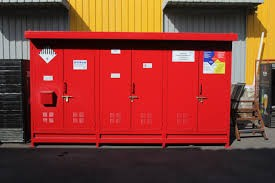

Dada la importancia que implica el manejo de desechos peligrosos y su impacto en la salud de las personas y el medio ambiente, es así como Eco-Resolventes con el fin de brindar una atención personalizada, pone a su servicio el asesoramiento en el manejo de desechos químicos donde se busca que cada uno de nuestros clientes conozca sobre:
 

 
